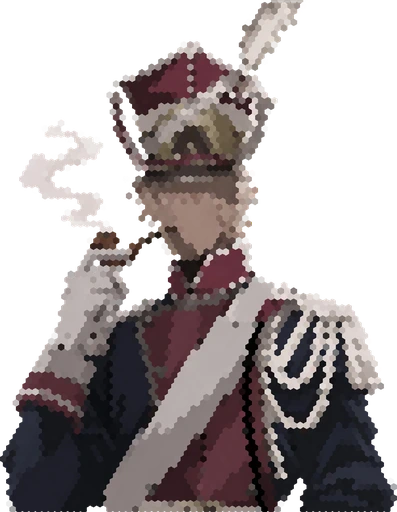

Об игре
Great Retreat — тактическая игра, в которой каждый отряд ходит по шестиугольным клеткам. Поле можно разглядывать в 2D или в 3D и вращать камерой.
- Кампания «История России» — семь глав: Древняя Русь, монголы и крестоносцы, Северная война, Отечественная война 1812 года.
- Кастомный бой против ИИ и сетевая игра с другом.
- Редактор карт: рисуйте рельеф, расставляйте отряды и делитесь картой коротким кодом.
- Энциклопедия войск и сражений.
- «Дорога славы»: за победы вы получаете монеты и медали, а на шкале ждут ордена, новые портреты и стикеры для чата.
Скриншоты
Lord of Retreat

Наставник игрока и главный герой обучения. Он объясняет основы управления отрядами, ведёт первые бои и затем передаёт командование вам.
Его принцип прост: вовремя оставленная позиция сохраняет армию.
- Нажмите «Скачать»: загрузится файл Great_Retreat.exe.
- Запустите его двойным щелчком. Распаковывать ничего не нужно.
- Если Windows покажет синее окно «Система Windows защитила ваш компьютер», нажмите «Подробнее», затем «Выполнить в любом случае». Так бывает с любыми новыми играми без платной цифровой подписи.